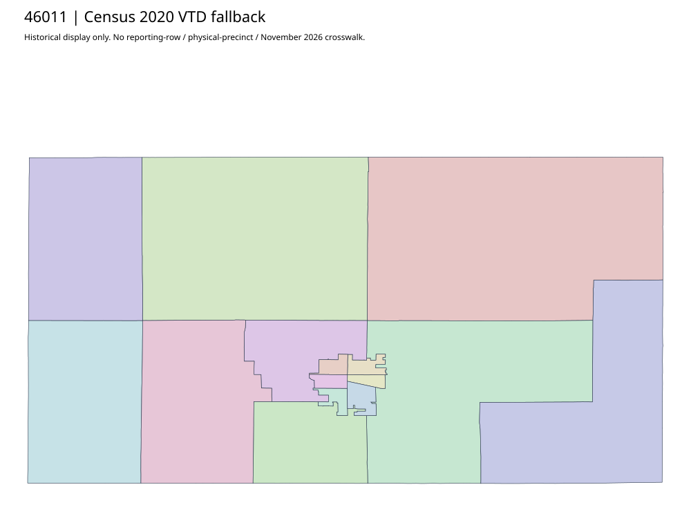

304 ordered indexBrookings | 46011
Official Elections to Precinct Maps to two acquired scanned PDFs (county district/precinct and Brookings city). Complete county map footer date is partly clipped in the original scan; no repaired date is invented. Separate acquired vote-center roster allows any county vote center, not a polygon assignment.
8 priority / 10 full historical observations. Parent is a summary ancestor, not additive to leaves. No physical feature matches or current reporting crosswalk approved.
Acquired shared-parent assets
map-46011-005 | complete1-page PDF; all-page contact sheet; complete page1; complete original gzip. Exact reconstruction: python -B scripts/reconstruct.py --id map-46011-005 /private/tmp/map.pdf
map-46011-006 | complete1-page PDF; all-page contact sheet; complete page1; complete original gzip. Exact reconstruction: python -B scripts/reconstruct.py --id map-46011-006 /private/tmp/map.pdf
Administrative/district supplement (not a precinct polygon match): map-46011-007
Census2020 fallback
15 native historical VTD features. Entire785-feature ZIP original retained once, all66 counties. Yankton has one countywide VTD. No current/reporting allocation. complete original gzip

Full binary/attribute/geometry QA
Observed authority/acquisition routes
Complete SOS authority fields including original blank/masked values: parent inventory. No contacts were sent.
Ordered full children
- Absentee Precinct | 7550 source votes | priority
- Brookings Activity Center | 1545 source votes | priority
- Volga Community Center | 1180 source votes | priority
- Bethel Baptist Church Area 1 | 959 source votes | priority
- Bethel Baptist Church Area 2 | 929 source votes | priority
- Holy Life Tabernacle | 915 source votes | priority
- Aurora Impact Church | 537 source votes | priority
- White McKnight Hall | 519 source votes | priority
- Bruce Community Room | 421 source votes | remainder
- Elkton Community Center | 383 source votes | remainder